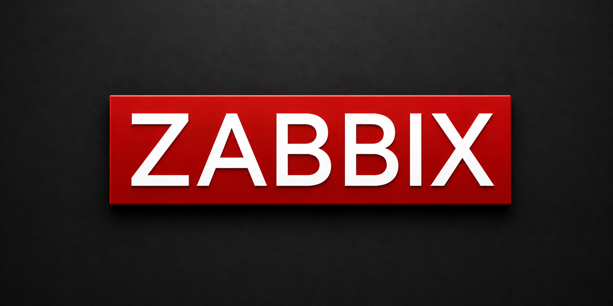

MES PROCÉDURES
Architecture Réseau d'Entreprise
INFRA S4P2 - Hocine IRATNI
Infrastructure complète mise en place avec pfSense, VLANs, Active Directory, et outils de monitoring. Schéma détaillé de mon environnement de test incluant la segmentation réseau, la sécurité périmétrique et la supervision avec configurations IP détaillées.
MES PROCÉDURES

Procédure AD1
Installation et configuration complète d'Active Directory : création de VM, installation Windows Server 2025, configuration du contrôleur de domaine, DNS et DHCP.

Procédure AD2
Configuration d'un deuxième contrôleur de domaine pour la redondance et la haute disponibilité du service Active Directory.

Procédure GLPI
Installation et configuration du système de gestion d'actifs informatiques GLPI avec intégration à l'infrastructure réseau.

Procédure Zabbix
Installation et configuration du système de monitoring Zabbix avec programmation des alertes et utilisation avancée de la plateforme.

Procédure Exchange
Installation et configuration d'un serveur de messagerie Microsoft Exchange, gestion des boîtes aux lettres et connecteurs.

Procédure Artica
Installation et configuration de la solution Artica pour la gestion centralisée du réseau et du filtrage du trafic.

Création de VM
Création et paramétrages complets de machines virtuelles sur Proxmox, incluant la configuration des ressources et des paramètres réseau.